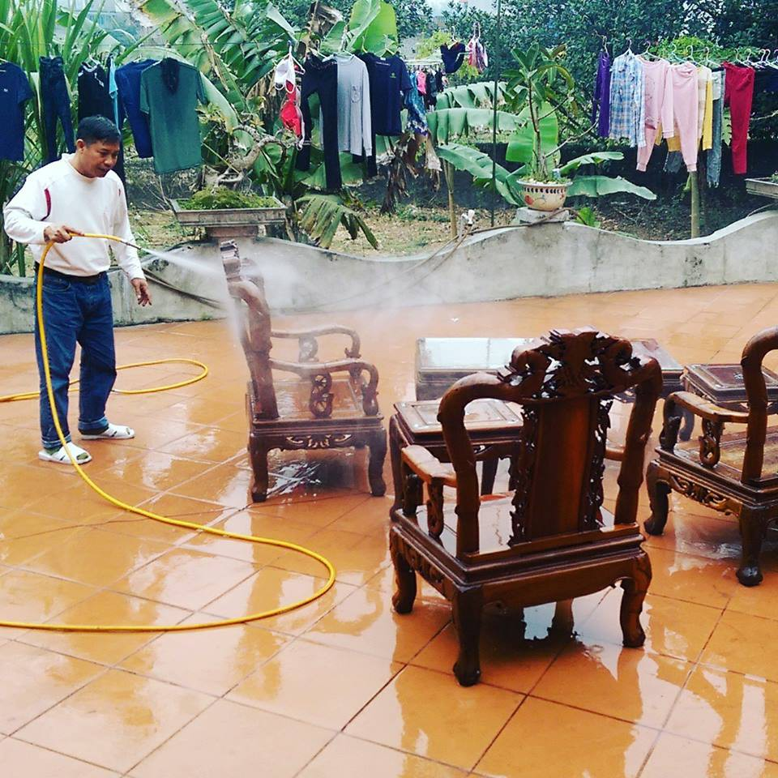
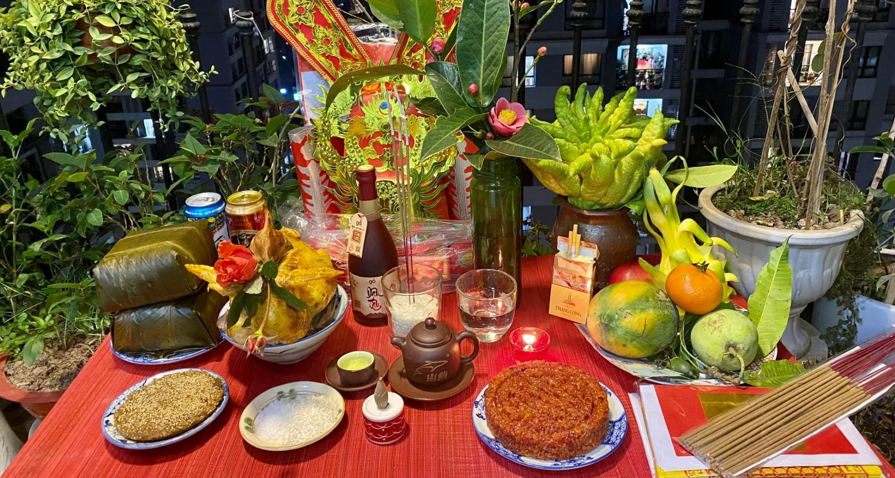
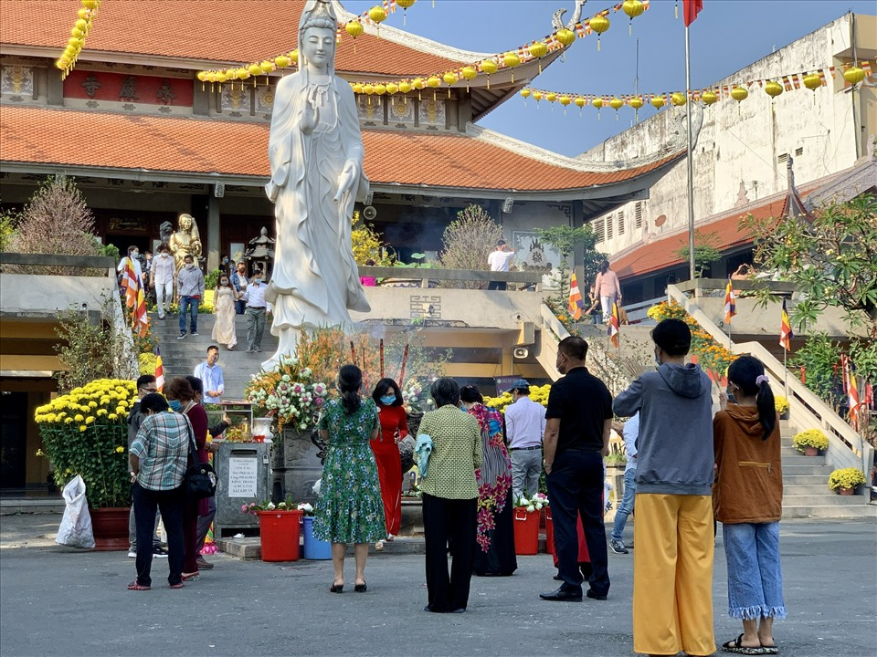
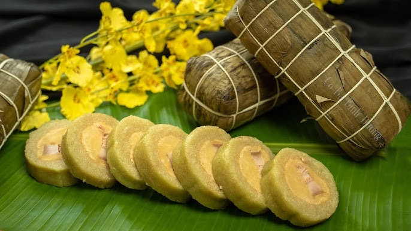
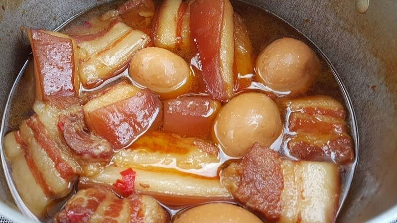
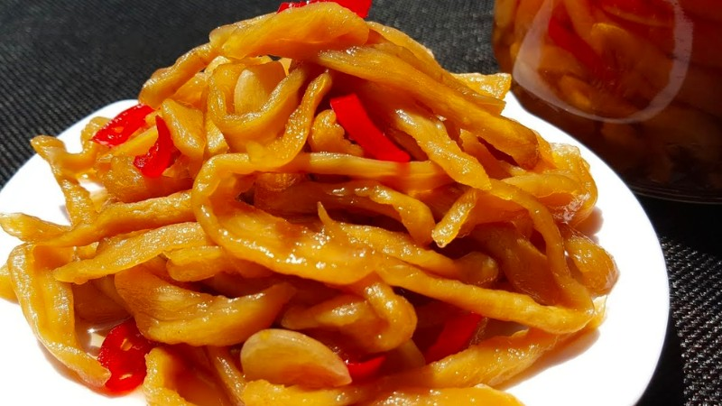
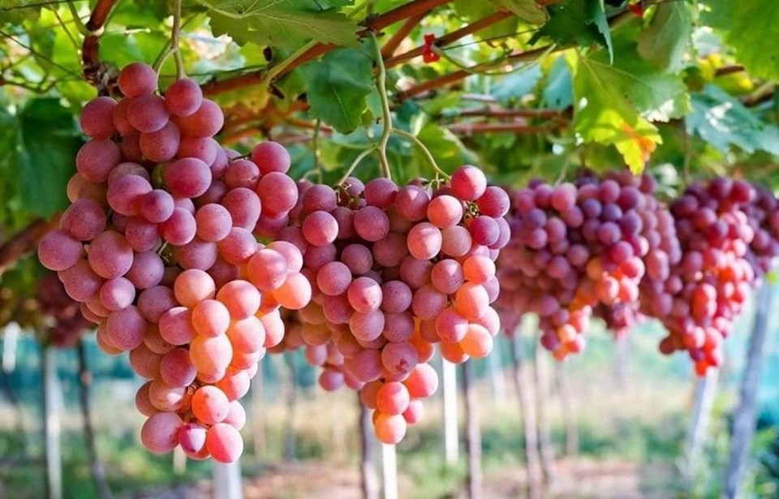
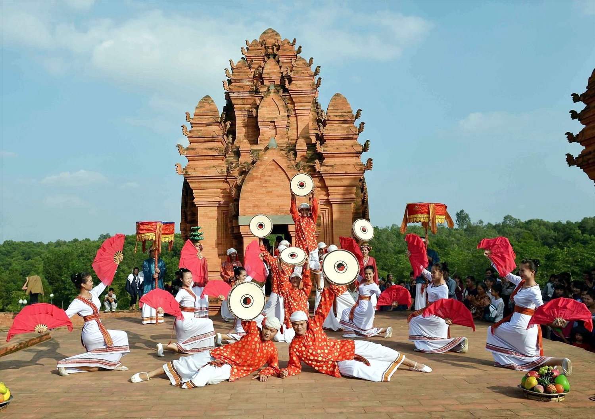

Ninh Thuận Ninh Thuận là tỉnh ven biển thuộc duyên hải Nam Trung Bộ, nổi tiếng là "xứ sở nắng gió" với khí hậu khô nóng, sở hữu cảnh quan hoang sơ, bờ biển dài, vườn nho bạt ngàn và văn hóa Champa đặc sắc. Với trung tâm là thành phố Phan Rang - Tháp Chàm, nơi đây thu hút du khách nhờ các điểm đến như Vĩnh Hy, Hang Rái, công viên đá Núi Chúa và các tháp Chăm cổ kính.

Nhà cửa được dọn sạch, trang trí hoa mai vàng và câu đối đỏ.

Gia đình quây quần bên mâm cỗ cúng tổ tiên và đón năm mới.

Người dân đến chùa cầu bình an, may mắn.

Món ăn truyền thống không thể thiếu trong ngày Tết.

Món ăn đậm đà tượng trưng cho sự đủ đầy.

Món ăn kèm của người dân địa phương dịp tết.

Đặc sản nổi tiếng được bày trên mâm ngũ quả.

Văn hóa và lễ hội Tết tại Ninh Thuận đặc sắc với sự giao thoa giữa người Chăm và Kinh, nổi bật nhất là lễ hội Kate (tháng 10) và Tết Ramưwan (tháng 3) của người Chăm. Các hoạt động bao gồm nghi lễ tháp cổ, tảo mộ, múa quạt, kèn Saranai và ẩm thực truyền thống, thể hiện lòng biết ơn tổ tiên, cầu mong mưa thuận gió hòa.